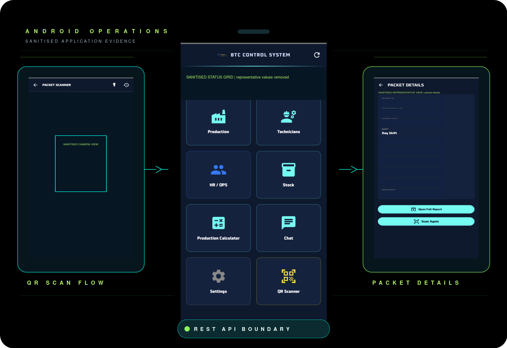
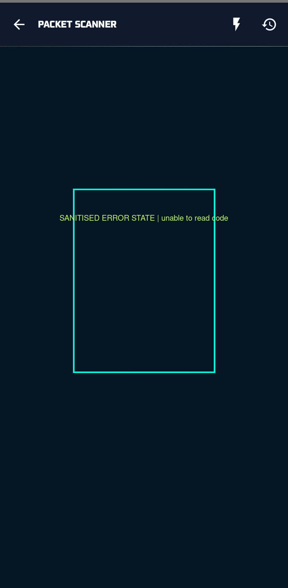

Android Operations App
An authenticated Android client for operational login, system-health checks, QR scanning and controlled access to production packet information.

Summary
The client combines authenticated login, a server-health check, QR scanning and controlled packet-information access. The public description focuses on network-aware behaviour and recovery states; it does not claim full offline data synchronisation.
Verified implementation themes
- Kotlin Android application with Compose-based screens.
- Authenticated login workflow with explicit authentication and transport failure states.
- Retrofit HTTP client and REST API integration with base-URL normalisation.
- CameraX and ML Kit barcode scanning for QR and Data Matrix workflows.
- Packet details, production information, server-health checks and network-aware error classification.
- Network-aware behaviour and recovery states, without claiming full offline synchronisation.
Workflow architecture
The public-safe model keeps the client, API boundary and operational context separate.
Installed-app evidence
These captures use sanitised or representative information. Private API addresses, credentials, access tokens, production records and operational identities are excluded.



Security and contribution
Authentication, constrained information display and careful failure states are more important than exposing a polished but unsafe public mock. No signing keys, private URLs, access tokens, internal APKs or operational identities are included here.
Technology lens
Kotlin Android, Retrofit, REST API integration, CameraX / ML Kit scanning, packet information and field usability are the public-facing implementation themes.
Public boundary
This public case study uses sanitised architecture and representative data. Private API URLs, signing keys, access tokens, internal APKs and operational identities are excluded.
Continue to the planning tool for a deterministic local demo.
RELATED: PRODUCTION CALCULATOR